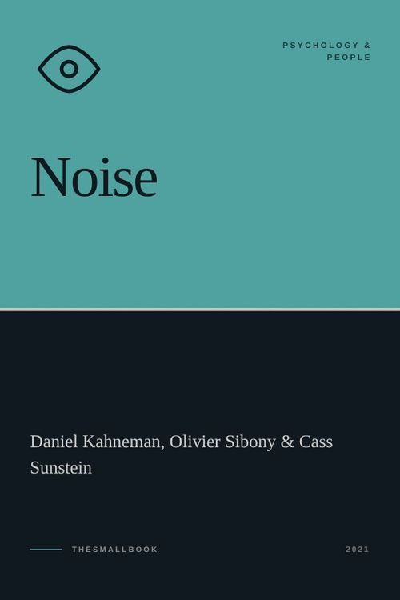

Why Did The Credit Rating Agencies Fail?
The Triple-A Stamp That Helped Sink the World
📜 What Happened
In the years before 2008, S&P, Moody's and Fitch stamped more than $3 trillion of subprime-mortgage securities with their highest rating: triple-A - the same grade as U.S. Treasury debt. The ratings were, in practice, paid for by the issuers whose products they rated; the analysts were judged on market share; and the models were fed with two years of housing data that could never see a nationwide decline. When the music stopped, more than half of AAA-rated subprime securities defaulted or were downgraded to junk. The U.S. Department of Justice extracted $1.375B from S&P (2015) and $864M from Moody's (2017). The failure was not corruption alone - it was noise: the same judgment made by thousands of analysts, all wrong the same way, presented as an objective stamp.
☠️ The Fatal Mistake
Selling certainty as a product - a judgment manufactured by conflicted, noisy processes was dressed as a precise, verified grade.
🧠 The Lesson (Free for You)
Ratings are opinions wearing uniforms. The agencies' lesson: when judgment is repeated at scale without measurement of its own variance, the noise is not random - it is correlated error, and correlated error is the most expensive kind. Never trust a single score without asking who paid for it and how often it is wrong.
The Antidote Book

Bias is the average of our errors; noise is the scatter - and it is often the bigger problem. The same case gets different sentences from different ju…
📖 OPEN THE FULL INTERACTIVE BREAKDOWN →Questions people ask about The Credit Rating Agencies
Why did The Credit Rating Agencies fail? Selling certainty as a product - a judgment manufactured by conflicted, noisy processes was dressed as a precise, verified grade.
How much was lost? >$3 trillion of 'AAA' debt that defaulted; $2.2B+ in U.S. settlements
What is the lesson? Ratings are opinions wearing uniforms. The agencies' lesson: when judgment is repeated at scale without measurement of its own variance, the noise is not random - it is correlated error, and correlated error is the most expensive kind. Never trust a single score without asking who paid for it and how often it is wrong.
The Credit Rating Agencies kyun fail hua? In simple English: Selling certainty as a product - a judgment manufactured by conflicted, noisy processes was dressed as a precise, verified grade. The cost was >$3 trillion of 'AAA' debt that defaulted; $2.2B+ in U.S. settlements.
Keep digging
More money and market failures · Open the full Graveyard
Read the antidote book summary: Noise
Related failures
- Why did Republic First Bank fail? 2024 · The smaller echo of 2023
- Why did PaisaBazaar fail? 2024 · India's Biggest Loan Marketplace, Written Down 95%
- Why did Silicon Valley Bank fail? 2023 · The First Bank Run at Twitter Speed
- Why did Signature Bank fail? 2023 · The Crypto Pivot That Sparked a 48-Hour Bank Run
- Why did First Republic Bank fail? 2023 · The Bank That Catered to the Rich - and Died of a Run
- Why did Credit Suisse fail? 2023 · 167 Years of Prestige, Death by a Thousand Scandals
Questions people ask about The Credit Rating Agencies
Why did The Credit Rating Agencies fail? Selling certainty as a product - a judgment manufactured by conflicted, noisy processes was dressed as a precise, verified grade.
How much was lost? >$3 trillion of 'AAA' debt that defaulted; $2.2B+ in U.S. settlements
What is the lesson? Ratings are opinions wearing uniforms. The agencies' lesson: when judgment is repeated at scale without measurement of its own variance, the noise is not random - it is correlated error, and correlated error is the most expensive kind. Never trust a single score without asking who paid for it and how often it is wrong.
The Credit Rating Agencies kyun fail hua? In simple English: Selling certainty as a product - a judgment manufactured by conflicted, noisy processes was dressed as a precise, verified grade. The cost was >$3 trillion of 'AAA' debt that defaulted; $2.2B+ in U.S. settlements.
Keep digging
More money and market failures · Open the full Graveyard
Read the antidote book summary: Noise
Related failures
- Why did Republic First Bank fail? 2024 · The smaller echo of 2023
- Why did PaisaBazaar fail? 2024 · India's Biggest Loan Marketplace, Written Down 95%
- Why did Silicon Valley Bank fail? 2023 · The First Bank Run at Twitter Speed
- Why did Signature Bank fail? 2023 · The Crypto Pivot That Sparked a 48-Hour Bank Run
- Why did First Republic Bank fail? 2023 · The Bank That Catered to the Rich - and Died of a Run
- Why did Credit Suisse fail? 2023 · 167 Years of Prestige, Death by a Thousand Scandals
Searchable, filterable, simple to read - they paid billions; you get the lesson.